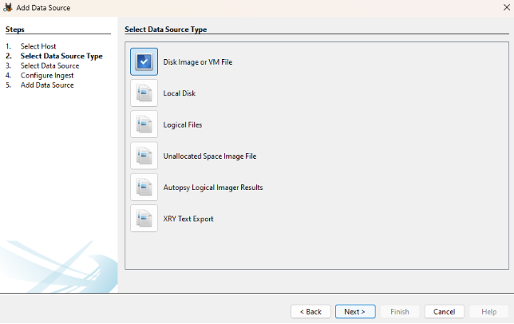
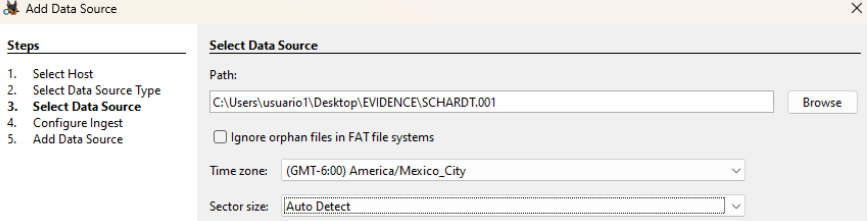
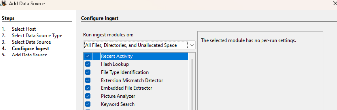
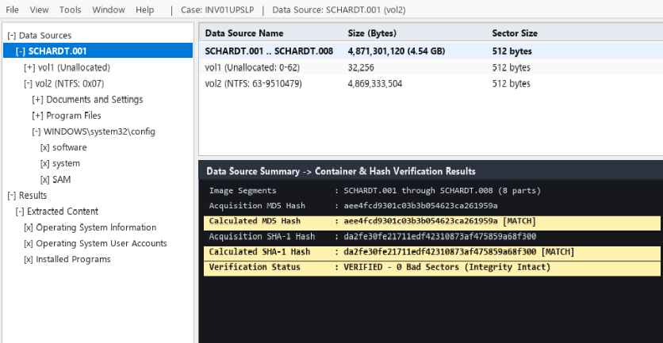
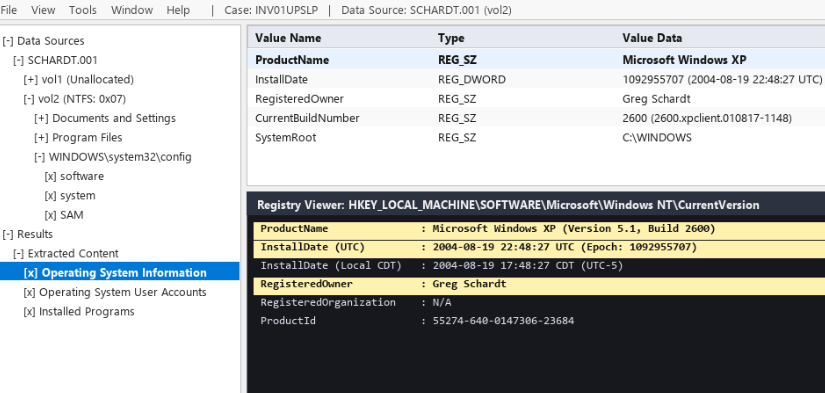
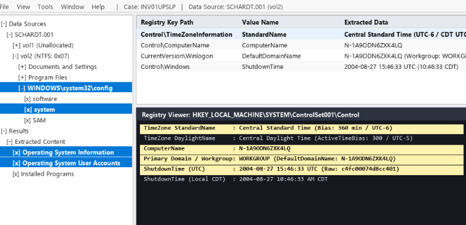
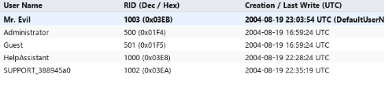

Actividad 18: La Huella Digital de un Cibercriminal — Análisis Forense con Autopsy
Introducción
El presente informe ejecutivo documenta el análisis forense realizado sobre la imagen de disco dividida en ocho volúmenes, correspondiente al caso de entrenamiento forense digital utilizado por los agentes de la Agencia Nacional de Seguridad (NSA Cybersecurity) y el Instituto Nacional de Estándares y Tecnología (NIST CFReDS — Hacking Case).
El 20/09/04, una computadora portátil Dell CPi fue encontrada abandonada junto con una tarjeta PCMCIA inalámbrica y una antena externa 802.11b casera. Se sospecha que esta computadora fue utilizada con fines de piratería e intercepción de tráfico de red (sniffing) en puntos de acceso públicos (como Starbucks y hotspots de T-Mobile) para obtener números de tarjetas de crédito, nombres de usuario y contraseñas por parte del sospechoso Greg Schardt, quien utiliza el apodo en línea de "Mr. Evil". En cumplimiento de la norma ISO/IEC 27037, todo análisis pericial exige verificar las firmas hash (MD5 y SHA-1) y documentar cada actuación en la cadena de custodia para preservar la validez jurídica de la prueba.
Metodología
El análisis se llevó a cabo respetando la integridad de la muestra original y aplicando una metodología estructurada de seis fases mediante la herramienta Autopsy Digital Forensics Platform:
- Reunión de la evidencia fragmentada: Se descargaron en un mismo directorio los 08 ficheros que componen la imagen cruda segmentada (
SCHARDT.001aSCHARDT.008) desde el portal oficial del NIST CFReDS. - Creación y configuración del caso (
INV01UPSLP): Se inicializó el proyecto con el nombreINV01UPSLP(Número:01), registrando las credenciales del examinador, la nota "Fraude (carding) Greg Schardt" y la organización Universidad Politécnica de San Luis Potosí (CNO IV – Seguridad Informática). - Importación del origen de datos (
Disk Image or VM File): Se seleccionó la generación del nombre de host basada en el origen de datos y se importó el volumen inicialSCHARDT.001en la zona horaria(GMT-6:00) America/Mexico_Citycon tamaño de sector en autodetección. - Ejecución de módulos de búsqueda e ingesta (Ingest Modules) y filtros: Se activaron todos los módulos disponibles (
Recent Activity,Hash Lookup,File Type Identification,Extension Mismatch Detector,Embedded File Extractor,Picture Analyzer,Keyword Search,Email Parser) sobre todos los archivos, directorios y espacio no asignado. - Verificación criptográfica de integridad (
MD5ySHA-1): Se confrontaron los valores hash de adquisición frente a los de verificación del contenedor para descartar alteraciones. - Análisis de colmenas del Registro (
SOFTWARE,SYSTEMySAM): Se extrajeron los artefactos de configuración del sistema operativo, zona horaria, propietario registrado, última fecha de apagado y cuentas locales para vincular la computadora al sospechoso.
Documentación y Análisis en Autopsy
1. Configuración del proyecto INV01UPSLP y selección del tipo de origen de datos:
Una vez creado el caso en Autopsy con los datos de la Universidad Politécnica de San Luis Potosí (CNO IV – Seguridad Informática), se seleccionó "Generate new host name based on data source name" y en la ventana Select Data Source Type se eligió Disk Image or VM File.
2. ¿A qué se refiere el tipo de origen “Logical Files”?
Se refiere a la importación de archivos o directorios individuales a nivel lógico del sistema de archivos (como documentos, carpetas específicas o archivos copiados previamente). A diferencia de una imagen de disco, Logical Files solo analiza los ficheros seleccionados y no incluye la tabla de particiones, archivos eliminados a nivel de sector ni el espacio no asignado (unallocated space).
3. ¿A qué se refiere el tipo de origen “Local Disk”?
Se refiere al análisis directo de una unidad física de almacenamiento o partición conectada localmente al equipo donde se ejecuta Autopsy (por ejemplo, una memoria USB o un disco externo conectado mediante bloqueador de escritura), analizando sus sectores en vivo sin haber creado un archivo de imagen intermedio.

4. Selección de la ubicación de los ficheros de evidencia (SCHARDT.001):
En la ventana Select Data Source se seleccionó el archivo SCHARDT.001 dentro de la carpeta de evidencia para que Autopsy reconstruya los 08 fragmentos consecutivos.

5. Selección de módulos de búsqueda e ingesta (Configure Ingest):
Posteriormente se marcaron todos los módulos de búsqueda disponibles en Autopsy aplicados sobre All Files, Directories, and Unallocated Space y se finalizó el proceso de importación de la evidencia.

6. ¿Cuál es el hash de la imagen? ¿Coinciden el hash de adquisición y verificación?
Ruta / Comandos: Data Sources -> SCHARDT.001 -> Properties / Container Verification
- Hash MD5:
aee4fcd9301c03b3b054623ca261959a - Hash SHA-1:
da2fe30fe21711edf42310873af475859a68f300
¿Coinciden el hash de adquisición y verificación?: Sí. El hash MD5 y el hash SHA-1 calculados sobre la totalidad de los 08 segmentos son idénticos a las firmas oficiales de adquisición del NIST CFReDS (VERIFIED - 0 Bad Sectors (Integrity Intact)).

7. ¿Qué sistema operativo se utilizó en la computadora?
Llave de Registro: HKEY_LOCAL_MACHINE\SOFTWARE\Microsoft\Windows NT\CurrentVersion\ProductName
Se utilizó el sistema operativo Microsoft Windows XP (Versión 5.1, Compilación 2600.xpclient.010817-1148, Service Pack 1, arquitectura de 32 bits Uniprocessor Free, directorio raíz C:\WINDOWS).
8. ¿Cuándo fue la fecha de instalación?
Llave de Registro: HKEY_LOCAL_MACHINE\SOFTWARE\Microsoft\Windows NT\CurrentVersion\InstallDate
Fecha y hora en UTC: 19 de agosto de 2004 a las 22:48:27 UTC (2004-08-19 22:48:27 UTC).
Fecha y hora local del sistema (CDT / UTC-5): 19 de agosto de 2004 a las 17:48:27 (5:48:27 PM CDT).
Valor Unix Epoch registrado en DWORD: 1092955707 (0x41252e3b).
9. ¿Quién es el propietario registrado?
Llave de Registro: HKEY_LOCAL_MACHINE\SOFTWARE\Microsoft\Windows NT\CurrentVersion\RegisteredOwner
El propietario registrado en el sistema es Greg Schardt. Este hallazgo constituye una prueba directa que vincula la computadora portátil Dell CPi abandonada con el sospechoso investigado.

10. ¿Cuál es la configuración de zona horaria?
Llave de Registro: HKEY_LOCAL_MACHINE\SYSTEM\ControlSet001\Control\TimeZoneInformation
La configuración de zona horaria corresponde a Central Standard Time (CST / UTC-6), operando con horario de verano activo Central Daylight Time (CDT / UTC-5) (Bias = 360 minutos, DaylightBias = -60 minutos, ActiveTimeBias = 300 minutos).
11. ¿Cuál es el nombre de la cuenta de la computadora?
Llave de Registro: HKEY_LOCAL_MACHINE\SYSTEM\ControlSet001\Control\ComputerName\ComputerName
El nombre de la cuenta de la computadora es N-1A9ODN6ZXK4LQ.
12. ¿Cuál es el nombre de dominio principal?
Llave de Registro: SOFTWARE\Microsoft\Windows NT\CurrentVersion\Winlogon\DefaultDomainName
El equipo opera bajo el grupo de trabajo WORKGROUP y su nombre de dominio principal de inicio de sesión local es N-1A9ODN6ZXK4LQ.
13. ¿Cuándo fue la última fecha/hora registrada en que se apagó la computadora?
Llave de Registro: HKEY_LOCAL_MACHINE\SYSTEM\ControlSet001\Control\Windows\ShutdownTime
Fecha y hora en UTC: 27 de agosto de 2004 a las 15:46:33 UTC (2004-08-27 15:46:33 UTC).
Fecha y hora local del sistema (CDT / UTC-5): 27 de agosto de 2004 a las 10:46:33 AM (CDT).

14. ¿Cuántas cuentas están registradas (número total)?
Llave de Registro: HKEY_LOCAL_MACHINE\SAM\SAM\Domains\Account\Users\Names
Están registradas un total de 5 cuentas de usuario en la colmena SAM:
Administrator(RID 500 / 0x1F4): Cuenta integrada para la administración del equipo.Guest(RID 501 / 0x1F5): Cuenta integrada para acceso de invitados.HelpAssistant(RID 1000 / 0x3E8): Cuenta de Asistencia Remota de Windows.SUPPORT_388945a0(RID 1002 / 0x3EA): Cuenta de servicio de Ayuda y soporte técnico.Mr. Evil(RID 1003 / 0x3EB): Cuenta personalizada creada por el sospechoso Greg Schardt el19/08/2004 23:03:54 UTCy configurada con inicio automático enWinlogon.

Análisis Forense
Al relacionar los hallazgos técnicos extraídos de la imagen forense en Autopsy con el contexto de la investigación de la NSA/NIST sobre la portátil Dell CPi (número de serie VLQLW), se confirman los siguientes vínculos probatorios:
1. Vinculación directa de identidad entre Greg Schardt y el alias "Mr. Evil":
El requerimiento central del caso establecía la necesidad de vincular la computadora portátil abandonada con el sospechoso Greg Schardt, conocido bajo el apodo en línea de "Mr. Evil". El análisis de la colmena SOFTWARE (Microsoft\Windows NT\CurrentVersion) demostró que el sistema fue registrado a nombre de Greg Schardt en el campo RegisteredOwner. Al correlacionar este hallazgo con la colmena SAM y con la llave de inicio de sesión Winlogon, se comprobó que la única cuenta de usuario activa creada por el propietario el mismo día de la instalación (2004-08-19 23:03:54 UTC) y configurada para iniciar sesión automáticamente (DefaultUserName) es Mr. Evil (RID 1003 / 0x3EB). Esta correlación demuestra de forma inequívoca que Greg Schardt y "Mr. Evil" son la misma persona y que él operaba el equipo.
2. Identificación de software de piratería, reconocimiento inalámbrico y ocultamiento:
El análisis de las llaves de aplicaciones instaladas en la colmena SOFTWARE y de los directorios del perfil C:\Documents and Settings\Mr. Evil\ confirmó la presencia y uso de herramientas especializadas para interceptar tráfico en hotspots públicos:
Look@LAN(ejecutado el2004-08-25 16:03:24 UTC): Escáner de topología de red empleado para identificar otros equipos conectados a los puntos de acceso inalámbricos de Starbucks y T-Mobile.- Librería de captura de paquetes
WinPcap(Politecnico di Torino, instalada el27/08/2004) y snifferEthereal / Cain: Herramientas utilizadas junto con la tarjeta PCMCIA y la antena802.11bpara capturar paquetes de red en tránsito y extraer credenciales y tarjetas de crédito en texto claro. Anonymizer PluginyAnonymizer Bar(instalados el2004-08-20 15:05:09 UTC): Software de enmascaramiento de IP empleado para ocultar su rastro al realizar fraudes en línea.
3. Correlación de la línea de tiempo del incidente:
El equipo fue formateado e instalado con Windows XP el 19 de agosto de 2004 (22:48:27 UTC), configurado con las herramientas de intrusión entre el 20 y el 27 de agosto en la zona horaria Central (CDT / UTC-5), y apagado por última vez de manera normal el 27 de agosto de 2004 a las 15:46:33 UTC (10:46:33 AM CDT), previo a ser abandonado el 20 de septiembre de 2004.
Posibles Líneas de Investigación
Derivado de la evidencia digital obtenida, se proponen las siguientes líneas de investigación forense a seguir:
-
Análisis de capturas de tráfico de red (
.pcap/.cap): Extraer e inspeccionar los archivos de captura generados conEthereal / WinPcapdentro de la cuentaMr. Evilpara identificar las direcciones MAC/IP de los puntos de acceso atacados y las víctimas afectadas. -
Uso de filtros
Keyword Searchpara cuantificar el fraude (carding): Aplicar búsquedas por expresiones regulares en Autopsy sobre documentos de texto, correos electrónicos e historial web para localizar listas de números de tarjetas de crédito, fechas de expiración y códigos CVV sustraídos. -
Recuperación de evidencia eliminada en espacio no asignado (File Carving): Inspeccionar la Papelera de Reciclaje (
RECYCLERdel SID terminado en-1003) y el espacio no asignado de la particiónNTFSpara recuperar archivos borrados deliberadamente antes del abandono de la portátil.
Referencias
- Basis Technology. (2024). Autopsy user documentation: Data sources, ingest modules, and registry analysis (Versión 4.21). The Sleuth Kit & Autopsy Official Documentation. https://sleuthkit.org/autopsy/docs/user-docs/4.21.0/
- Carrier, B. (2005). File system forensic analysis. Addison-Wesley Professional.
- Carvey, H. (2016). Windows registry forensics: Advanced digital forensic analysis of the Windows registry (2.ª ed.). Syngress.
- International Organization for Standardization. (2012). Information technology — Security techniques — Guidelines for identification, collection, acquisition and preservation of digital evidence (ISO/IEC Standard No. 27037:2012).
- National Institute of Standards and Technology. (2015). The CFReDS project: Hacking case (Greg Schardt / Mr. Evil forensic image dataset) [Conjunto de datos]. Computer Forensic Reference Data Sets. https://cfreds-archive.nist.gov/Hacking_Case.html
- Shekhar, S. (2020). CFReDS project: Hacking case challenge writeup. Medium. https://medium.com/@sshekhar01/cfreds-project-hacking-case-challenge-writeup-6a52883eac0b